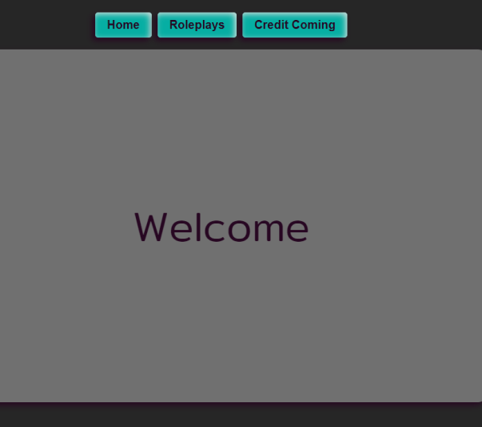
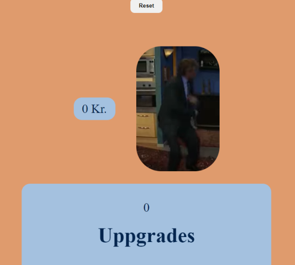
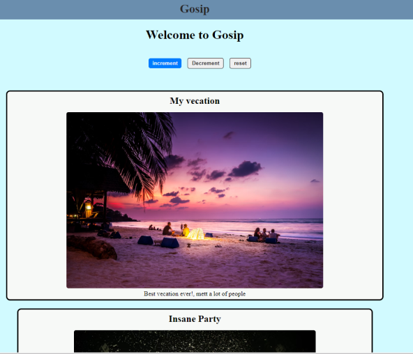

Hei! André Kvist her. En kommende Frontend-utvikler med lidenskap for og skape gode UI-design med en spesiell forkjærlighet for CSS. Jeg Har fullført den teoretiske biten på Kodehode og utforsker nå kreative design utfordringer. I en oppgave jeg hadde, laget jeg en nettside som kombinerte YouTube og Twitch i Figma. Når jeg ikke koder, liker jeg å game. I tillegg maler jeg figurer, og liker å drive med rollespil. Her tar jeg gjerne på meg rollen som gamemaster. Ellers liker jeg å spre litt kodeglede både foran skjermen, og i samtaler.
Slå av en prat"There are no mistakes, only happy accidents"